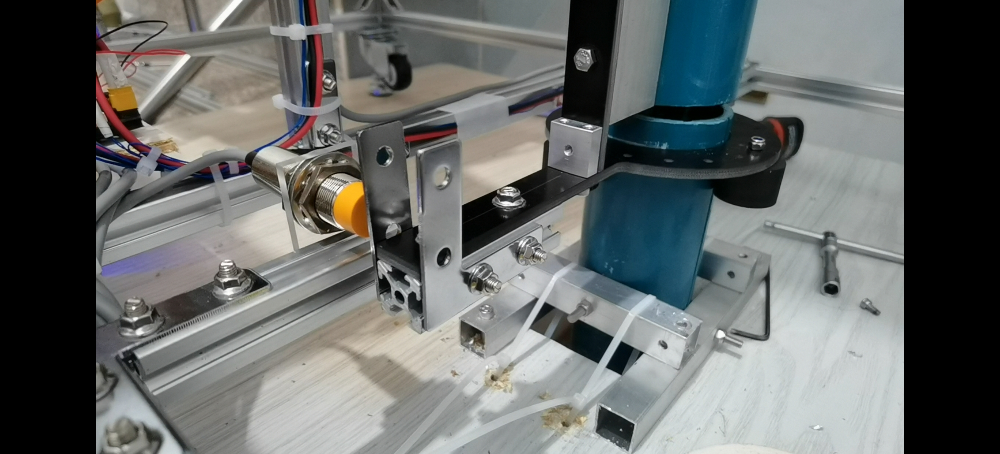
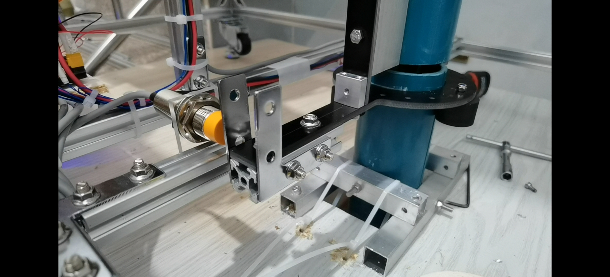
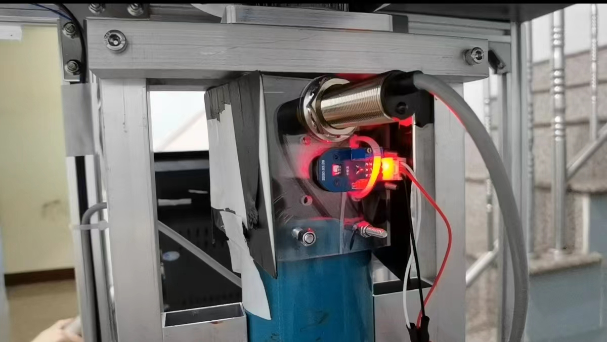
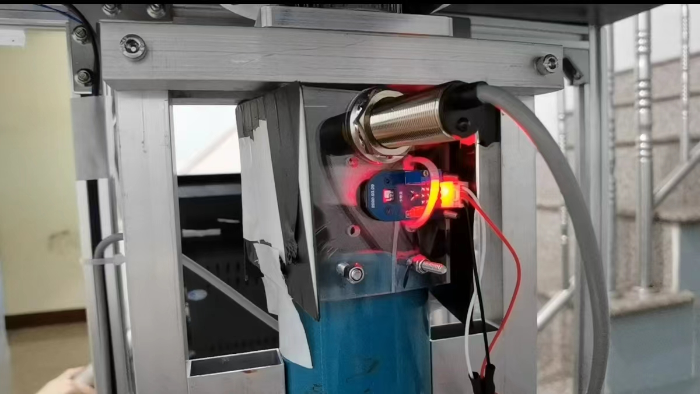

This is the 2021-2022 FYP project of ISD. The project found that the existing land-movement monitoring solution in the construction industry is frequently used yet inconvenient. So an Intelligent Real- Time Land-movement Monitoring System (IRLMS) including two methods, Smart Inclinometer (SInc) method and Meter In a Tube (MIT) is proposed to make the ground monitoring process real-time and affordable while providing a better user experience compared to existing solutions. Functional prototypes are built and tested. Though improvement still can be made, the prototypes worked as expected. Both method performed equally as the current traditional inclinometer using method and better in data refreshing rate, data manipulation and user interaction. Both methods also leaves potential for building construction IoT system in the future.


 


 

Empathize
Our team did the empathize parts mainly by talking to our industry partner Paul Y. Engineering. We have several conversations with their staffs and workers. Our first taget topic is actually Line Indication and we would like to built a Advanced Line Indication (ALI) solution. But later, we found that there are already mature product deployed in America and in Hong Kong, though workers intensive, they have existing solutions that make our solution hard to deploy. Therefore we change to land-movement monitoring.
Problem Statement
How might we make landslide monitoring process more systematic, more user friendly while making the monitoring process real time and affordable.
Solutions
Smart Inclinometer (SInc) Solution
The smart inclinometer is a device put on top of each inclinometer tube. The device performs the works of a construction worker but fully automatically and more frequently. Smart Inclinometer will enter the working stage after every waiting period. At a working stage, it will put the inclinometer probe through the tube to collect data. The data will be processed and sent to the cloud for processing, visualization, and alert. Several Smart Inclinometers at different tubes and different sites form a network system. The workers can access the processed and visualized data of the whole system directly online and download the generated reports if needed. The Smart Inclinometer also has a human interaction interface for maintenance needs and special activities. Our prototype is fully functional and our experiment shows that the Smart Inclinometer performed equally to the traditional inclinometer but better in measuring frequency, data manipulation, and user interaction.
Meter In a Tube (MIT) Solution
Meter In a Tube (MIT) is a device that reduces the number of total parts required by integrating the sensor with the tube. This eliminates the step of inserting a separate sensor into the tube and will still be useable when the tube is bent sharply since there are no moving parts. The sensors used are called strain gauges and they are adhered to the inner surface of the tube. There are 3 sensors along the circumference of the tube and 4 sets of these triplets along the 1-meter segment. Each segment is connected mechanically with a one-step connector and electrically with an aviator plug. After collecting data from these sensors, an algorithm will convert the collected data into a digital curve that reflects the shape of the actual tube.
My responsibility
I worked on the Smart Inclinometer (SInc) solution in this project.
- Mechanical design and manufacture
- Online user interaction design (Dynamic website)
Using SolidWorks and available materials in the market
Using HTML, CSS, JS, NodeJS, ExpressJS
Links
Project Poster Project Final ReportVideos
Here is the video introduction of the system on YouTube. You may also click the playlist button at the top right of the video frame to see other demo videos.